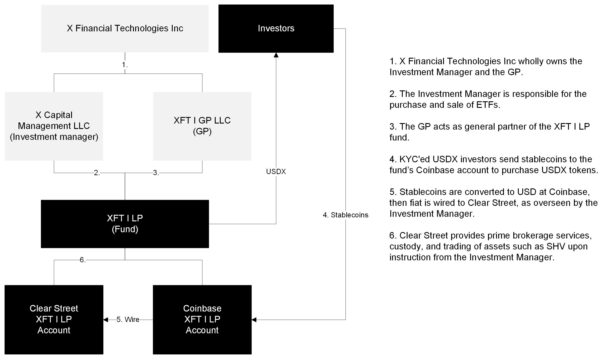

Company
- XFT is an onchain capital markets firm. Our software allows users to trade traditional securities, like stocks and bonds, on the blockchain. We develop next-generation institutional investment products, liquidity provisions, and stablecoin payments infrastructure.
- 1. USDX is a tokenized US Treasuries fund for institutional cash management and payments
- 2. NAV token is a second layer of liquidity for closed-end funds
- Tokenized money market fund
- Tokenized US treasuries fund
- API + EVM-compatible layer 1 blockchain
- Regulatory oracles
- Stablecoin payments infrastructure
- B2B Payments
- Difficult to track
- High fees
- Slow
- Lack transparency
- Stablecoins
- No yield distribution
- Lack transparency
- Depegging, USDC reliance
- Money Market Funds
- Collateral immobility
- Redemption pressure during market stress
- Costly and problematic settlement
- Cash Management
- Idle cash losing value due to inflation
- High subscription and redemption fees
| Customer | Problem | Solution |
|---|---|---|
| CEF | Fixed share count trades at volatile premiums/discounts to NAV | Second layer of liquidity |
| Neobanks | Limited retail access to alternatives | Tokenize assets and quote at NAV on platforms |
| CEF | Sparse NAV exit opportunities + liquidity for underlying assets | Orderbook for alternative assets |
| Blockchain | Global regulatory and adoption variance | Geoledgers, token wrapping, regulatory oracle |
- 1. Idle non-yielding cash balances held in neobanks
- 2. US National Deficit
- 3. MMF collateral outflows during market stress
- See here for more info.
USDX
- XFT retains a small fraction (20%) of the corresponding yield, with the rest distributed to USDX token holders through rebasing. Success is measured via the following KPIs:
- 1. USDX TVL
- 2. USDX held on EOAs (as proxy for missionary holders
- 3. USDX held in DeFi protocols on Arbitrum, broken by usage (Lending, Perp, DEX)
- 4. Number of USDX holders
- 5. Volume transacted with USDX
- Margins expand with TVL proportionally.
X Ledger
- XFT makes money by capturing the difference (spread) between the buying (bid) and selling (ask) prices of tokenized assets on our platform.
- Bid/ask spread
- Tokenization
- Redemption fee
- Arbitrage
- Dividend, interest, coupon
- B2B
- Regulators, neobanks, fund managers, market makers, trading + lending desks, payment fintechs
- Closed-end fund managers
- Franklin Templeton
- BlackRock
- Saba Capital
- Pershing Square Holdings, Ltd.
- Market makers + trading desks
- Citadel Securities
- Goldman Sachs
- Neobanks
- Robinhood
- Public
- Visa
- XFT State of Blockchain 2024 report here
- See here for market sizes
- Outlook for demand for US Treasuries here
Misc
- Alternatives ->$22 trillion
- Unlocked value for 10 BlackRock CEFs -> $1.4 trillion
- Robinhood users -> 24.1 million
- Private markets wealth transfer -> $84 trillion
Growth
- Tokenization by 2030 ->$16 trillion
- Crypto activity and usage hit all-time highs
- Crypto has become a key political issue ahead of the U.S. election
- Stablecoins have found product-market fit
- Infrastructure improvements have increased capacity and drastically reduced transaction costs
- DeFi remains popular — and it’s growing
- Crypto could solve some of AI’s most pressing challenges
- More scalable infrastructure has unlocked new onchain applications
- Visit our newsroom here for more insight into why now is the opportune time to start this company.
Purpose
- Our purpose is to utilize blockchain to enable an inclusive, resilient, and frictionless global economy.
Team
- First-hand problem experience from every customer perspective, passionate about the solution
- 200+ years of industry expertise in banking / fintech / payments
- Technical wherewithal and experience building successful early stage companies from scratch
Company
- Global ~compliant~ distribution network
- Real-time rulemaking
- Latency + execution solutions
- World-class corporate partners
Principles
- At X Financial Technologies, our commitment extends beyond innovation; we prioritize the needs and security of our end-users above all else. As we strive to become the most consumer-centric financial services company, we uphold the highest standards of compliance and ethical practices. By aligning our incentives with those of our clients and rigorously adhering to regulatory frameworks, we ensure transparency, fairness, and responsibility in every transaction. Our approach is built on a foundation of trust, aiming to foster a sustainable and inclusive financial ecosystem that puts the consumer first.
- No. We have no plans to build or launch a XFT token.
USDX
- USDX is a tokenized US Treasuries fund for institutional cash management and payments. The significant majority of its assets are invested in the Franklin OnChain U.S. Government Money Fund (FOBXX).
- Learn more here
Money Market Funds
- 1. Increased AUM
- 2. Enhanced liquidity
- 3. Reduced funding and cash flow volatility
- 4. Greater counterparty diversification
- 5. Support for capital preservation
- 6. Yield enhancement opportunities
Neobanks
- 1. Yield on idle cash balances
- 2. Low minimum investment
- 3. Instant mint and redemption 24/7/365
- 4. Frictionless collateral mobility
- These benefits arise because idle Visa cash inflows via USDX provide more capital for the fund to invest, improving liquidity and stability. This allows for better risk management, the ability to meet redemptions efficiently, and opportunities to pursue higher yields within established risk limits.
- Neobank cash inflows
- Boosts AUM
- Reduces cash flow volatility
- Increases daily/weekly liquid assets
- Allows greater counterparty diversification
- Larger AUM, higher management fee revenue
- Higher management fee revenue
- Liquidity risk reduction
- These benefits occur because larger inflows provide more capital to invest, spread risk, and meet redemptions, while offering flexibility to pursue higher yields within risk parameters.
Investors
Fund Managers
- MMF
- Boosts AUM + fee income
- Reduces cash flow volatility
- Increases daily/weekly assets
- Allows for greater counterparty diversification
- Investors
- Daily yield on idle cash
- Low minimums
- Instant + certain settlement with 24/7 minting and redemption
- Yield-bearing collateral
- Payment providers
- Reduce prefunding from eight days to four
- Reduce FX fees by 20 to 30 bps
- Focus on corporate strategy over day-to-day operations
- Improved access, reduced cost, faster speed, certainty
Problem
- The U.S. national debt grows due to high borrowing costs and inefficient demand for Treasuries, limiting the government's ability to manage debt sustainably.
Solution
- XFT's tokenized money market fund "USDX" channels massive cash inflows into U.S. Treasuries, increasing demand, lowering yields, and reducing borrowing costs, helping manage the national debt.
- 1. Neobanks funnel deposits into the tokenized fund.
- 2. Fund purchases U.S. Treasuries with those inflows.
- 3. Increased demand lowers Treasury yields.
- 4. U.S. government borrows at lower interest rates.
- 5. Reduced borrowing costs help slow national debt growth.
Flow of Funds

Participants
- 1. Apex Fintech Solutions, prime broker and custodian of securities
- 2. Visa, USD Fedwire
- 3. Circle, stablecoin to fiat conversion
Sequence
- 1. Investor sends USDC to XFT Order Processor.
- 2. XFT Order Processor forwards USDC to Circle for conversion to USD.
- 3. XFT sends USD via Fedwire to Visa.
- 4. Visa transfers USD via Fedwire to Apex Fintech Solutions.
- 5. XFT Order Processor places an offchain order with Apex Fintech Solutions for FOBXX
- 6. Apex Fintech Solutions fills the order and acquires FOBXX.
- This process converts USDC to USD, completes a Fedwire transfer, and purchases FOBXX. This setup directly tokenizes offchain government-backed securities with minimal intermediaries.
- USDX's peg to the U.S. Dollar is maintained by market makers and trading firms.
- Market makers and trading firms that have XFT accounts help maintain USDX's peg to the U.S. Dollar by taking advantage of arbitrage opportunities, which results in the rebalancing of the supply and demand of USDX in the market.
- For example, if USDX is trading at $1.01 on the secondary market due to high demand, market makers can mint USDX for exactly $1 and make a profit of $0.01 by selling for $1.01. Minting more USDX increases the supply and brings the price back down to $1.
- If USDX is trading $0.99, market makers can buy USDX for $0.99 and make a profit of $0.01 by redeeming for exactly $1. Redeeming USDX reduces the supply and brings the price back up to $1.
- USDX operates in a very similar way as other fiat-backed stablecoins like USDC or USDP. Primary Users (those who have an account with XFT) can mint and redeem USDX at $1. Both Primary and Secondary users can freely transfer their USDX, deposit it into smart contracts, and interact with any protocol that is compatible with the ERC20 standard.
- 1. USDX is fully collateralized by "USDX Reserves", held in segregated, bankruptcy remote accounts.
- 2. Reserves are composed exclusively by short-term US Treasuries. Short term US government debt is considered the lowest risk USD-denominated asset.
- 3. "USDX Reserves" differ from most fiat-backed stablecoins in that the composition of stablecoins and bank deposits is minimized, to mitigate counterparty risk.
Bankruptcy-remote legal structure
Benefits of traditional LP/GP fund structure
- 1. XFT tokens offer enhanced investor protection and lower risk compared to existing stablecoins.
- 2. XFT's LP/GP structure provides bankruptcy remoteness, as investors have the only claim on fund assets.
- 3. USDX tracks the investment results, including yield, of the underlying ETF.
- 4. Traditional LP/GP fund structure is well-understood by investors and regulators.
- USDX is available in two versions, an accumulating token (USDX) and a rebasing token (rUSDX). While both versions pay out yield upon redemption and accrue yield daily, the manner in which the accrual is represented differs.
- For USDX, the accruing yield gets ‘accumulated’ into the token price. As the underlying investments accrue yield daily, we recognize this yield by increasing the Net Asset Value (NAV) of the underlying Fund, thereby increasing the NAV per USDX token. We typically update the price once every Business Day, generally at around 6pm ET.
- rUSDX, on the other hand, is intended to maintain a price of $1.00 per token, with the accruing yield represented by the division of rUSDX tokens into more tokens via rebasing. See our support documentation to learn more.
- As an example, let’s say you held 1 USDX token worth $100 and 100 rUSDX tokens worth $1.00 each. The next day the NAV per USDX token increased to $101 per token. After the price update and rebasing, your holdings of both rUSDX and USDX would be worth $101.00 each ($202.00 in total). You would still have a balance of 1 USDX token worth $101.00. However, due to the rebasing nature of rUSDX tokens, you would now hold 101 rUSDX tokens worth $1.00 per token.
How is yield (RewardMultiplier) calculated?
- USDX rebases daily based on the RewardMultiplier variable. This variable is controlled by XFT and adjusted daily.
- 1. rUSDX increases the number of tokens daily to reflect yield.
- 2. This allows for more precise yield distribution, as it can add fractional tokens.
- 3. USDX, on the other hand, increases in price, which may lead to slight rounding differences.
- Incorporated businesses can open an account with XFT to mint and redeem USDX 1:1, as long as the business falls in our terms and conditions.
- Holders of USDX tokens are, by definition, limited partners in the Fund and therefore have statutory rights of limited partners under the Delaware Revised Limited Partnership Act and contractual rights under the Fund’s Amended and Restated Limited Partnership Agreement and the applicable Subscription Documents (available here), including limitation of liability. Tokenholders can further avail themselves of protections of applicable regulatory bodies outlined in Section IV.2 above.
- U.S. Securities Act Form N-1A for Mutual Funds
- U.S. Securities Act Reg. D Exemption
- U.S. Money Services Business
- Cayman Islands Mutual Funds Act
Rules and Exemptions
- Rule 22d-1 (17 CFR 270.22d-1), Rule 32a-4 (17 CFR 270.32a-4)
Fund structure
- 1. XFT Finance Inc wholly owns the Investment Manager and the GP.
- 2. The Investment Manager is responsible for the purchase and sale of ETFs.
- 3. The GP acts as general partner of the XFT I LP fund.
- 4. KYC'ed USDX investors send stablecoins to the fund’s Coinbase account to purchase USDX tokens.
- 5. Stablecoins are converted to USD at Coinbase, then fiat is wired to Clear Street, as overseen by the Investment Manager.
- 6. Clear Street provides prime brokerage services, custody, and trading of assets such as SHV upon instruction from the Investment Manager.
Other
- Closed-end fund forms
- USDX is fully collateralized by "USDX Reserves," held in a bankruptcy remote setup for the benefit of users. Reserves are composed fully by US Treasuries or equivalents. Although considered ultra-safe, users are taking the risk of default of US debt.
- USDX Reserves are not composed by bank deposits or other stablecoins, isolating users from the risk of bank failures or stablecoin depegs. Note: There is a short period after the purchase of new USDX where assets needs to be off- ramped and wired to investment account, creating a small exposure to banks and digital assets. This should be minimal.
Technology
USD <> USDX
- 1. Neobank identifies idle USD in user accounts
- 2. Neobank initiates subscription with XFT
- 3. Neobank sends USD wire to XFT's bank
- 4. XFT processes subscription
- 5. XFT issues Temporary Global Certificate
- 6. XFT wires USD to custodian
- 7. XFT orders U.S. Treasuries from primary dealer
- 8. XFT sets USDX price using Pricer contract
- 9. XFT sets Claimable Timestamp in USDXManager
- 10. After timestamp, XFT initiates mint process
- 11. USDXManager proposes mint to Token contract
- 12. XFT approves and signs transaction
- 13. USDX tokens minted to neobank's wallet
Counterparties
- 1. Neobank (investor)
- 2. XFT (issuer)
- 3. XFT's Bank
- 4. Custodian
- 5. Primary Dealer
- 6. USDXManager Contract
- 7. USDX Pricer Contract
- 8. USDX Token Contract
Payments
- 1. End User initiates ACH deposit from bank account to their account at Company.
- 2. End User authenticates bank account using Plaid.
- 3. XFT API sends the deposit details to XFT’s bank.
- 4. XFT’s bank pulls the USD from the End User’s bank into the XFT reserve account.
- 5. XFT creates new USDX and deposits into the Company’s XFT Account.
Payouts
- 1. End User initiates withdrawal of their balance with Company to their bank.
- 2. End User authenticates their bank account using Plaid.
- 3. Withdrawal details passed to XFT, who removes USDX from Company’s XFT Account.
- 4. XFT API sends withdrawal details to XFT’s bank.
- 5. XFT’s bank transfers USD funds to End User’s bank.
Distributions
- 1. XFT calculates daily yield from Treasury investments.
- 2. Yield distribution data is sent to the USDXManager Contract.
- 3. USDXManager Contract updates token balances or reference price:
- For rUSDX: Calls rebase function to increase token balances.
- For USDX: Updates reference price to reflect new token value.
- 4. USDX Token Contract updates token holders' wallets.
- 5. Token holders receive notifications about the yield distribution.

USDX vs rUSDX
- 1. XFT calculates daily yield from Treasury investments
- 2. XFT prepares yield distribution data per token holder
- 3. XFT initiates distribution via USDXManager Contract
- 4. USDXManager Contract calls rebase function or updates reference price
- 5. USDX Token Contract updates token balances (rebasing) or token price (accumulating)
- 6. Token holders' wallets reflect increased balances or token value
- 7. Notifications sent to token holders about yield distribution
Counterparties
- XFT (Yield calculation and initiation)
- USDXManager Contract (Yield distribution)
- USDX Token Contract (Token updates)
- Token holders (Yield recipients)
Rebasing Distributions
- 1. XFT calculates daily yield from Treasury investments
- 2. XFT prepares yield amounts per token holder
- 3. XFT initiates distribution via USDXManager Contract
- 4. USDXManager Contract calls the rebase function
- 5. USDX Token Contract increases token balances of holders
- 6. Token holders' wallets show increased token quantities; token price remains at $1
- 7. Holders are notified about the yield distribution
Accumulating Distributions
- 1. XFT calculates daily yield from Treasury investments
- 2. XFT prepares yield amounts per token holder
- 3. XFT initiates distribution via USDXManager Contract
- 4. USDXManager Contract updates the reference price
- 5. USDX Token Contract adjusts the token price
- 6. Token holders' wallets reflect increased token value; token quantity remains constant
- 7. Holders are notified about the yield distribution
Instant Mint Subscription
- Step 1: Atomic Mint Transaction
- (1) The user interacts with the InstantManager smart contract to request a subscription. (2) The InstantManager contract immediately routes the investor’s USDC to the USDX Coinbase Account of XFT I LP. (3) The InstantManager contract calls the Price Oracle contract to (4) get the current price of USDX. (5) The InstantManager contract uses that price to calculate how many USDX to mint. (6) The InstantManager contract then calls the mint() function in the USDX smart contract, which (7) mints the correct number of USDX tokens. (8) The InstantManager contract then routes these newly minted USDX tokens to the investor.
hello
- Step 2: Manual Processing
- Once a day, the operations team converts USDC to USD, wires the USD to the Fund’s custodial account, places a buy order for FBOXX, and wires the money from custodian to fill the order. Once a day, FBOXX tokens are minted and sent to USDX’s smart contract, where they are stored.
Instant Redemption
- The first – and this time only – step is again an atomic transactaction, best described by reference to the below diagram:
- (1) The investor initiates the redemption to the USDXInstantManager smart contract. (2) The InstantManager contract calls the transferFrom() function of the USDX Token contract, which causes (3) the USDX to be transferred from the investor’s wallet into the InstantManager contract, which then (4) burns the USDX. To figure out how much USDC is due to the investor (and therefore how many FBOXX are necessary to sell), the InstantManager contract (5) calls the getPriceData() function in the USDX Price Oracle, which (6) returns the price. Once the InstantManager contract (7) determines how many FBOXX must be sold, it (8) initiates the redeem() function in the Circle FBOXX redemption contract, which then (9) returns USDC. Finally, (10) the InstantManager sends the USDC to the investor’s wallet.
USDX
- USDX is a standard ERC20 Token with minor modifications for regulatory compliance and composability. It leverages the battle-tested OpenZeppelin Transparent Upgradeable Proxy, ERC20, and Role Based Access Control (RBAC) standards. To ensure compliance, USDXincorporates native transfer hooks that enforce KYC and sanctions checks on all transactions. For every token transfer, the from, to, and msg.sender addresses are verified against the General Partner’s KYCRegistry and the Chainalysis Sanctions Oracle, ensuring that only authorized parties can interact with the token.
rUSDX
- rUSDX is an upgradeable, rebasing ERC20 token, with its design inspired by Lido’s stETH. Like USDX, it leverages OpenZeppelin’s RBAC and Transparent Upgradeable Proxy standards and enforces the same transfer restrictions. Users acquire rUSDX by granting USDX allowance to the rUSDX token contract and invoking rUSDX::wrap(uint256 _USDXAmount), which deposits their USDX into the contract. Conversely, users can convert back to USDX by calling rUSDX::unwrap(uint256 _rUSDXAmount), which burns rUSDX and returns the corresponding amount of USDX. The user’s holdings are tracked through an account-to-shares mapping, which records the proportion of USDX they own. The rebasing mechanism is observed through the rUSDX::balanceOf(address _account) function, which calculates rUSDX balances by multiplying the user’s shares by the latest USDX price. Consequently, as the USDX price rises, rUSDX balances increase proportionally. rUSDX is always valued at one dollar and conversion can be performed by authorized users by visiting https://x-financial-technologies.replit.app/usdx.html .
USDXInstantManager
- Users who have completed KYC verification can access the Fund’s platform for instant minting and redemption of USDX. This process is powered by the USDXInstantManager contract, which has undergone two independent security audits.
- To enhance security, instant mints and redemptions are limited by both global and per-user time-based rate limiters. The global rate limiting is intrinsic to the USDXInstantManager contract, while the per-user based rate limiter contract can be found here. We also conduct thorough internal reconciliation reporting daily to ensure all token balances and financial metrics are accurate and consistent.
KYCRegistry
- The KYCRegistry contract maintains a nested mapping (requirement_group => (user_address => is_verified?)) to track the set of users authorized to hold and transact USDX. Clients can use the function KYCRegistry::getKYCStatus(uint256 requirementGroup, address account) to verify whether a specific user is authorized for USDX transactions.
- Currently, only requirement group applies to USDX holders, but additional requirement groups can be created in the future for new tokens with distinct compliance needs. The KYCRegistry contract extends the OpenZeppelin Role-Based Access Control 1, enabling different accounts to manage various requirement groups, supporting future security and compliance use cases.
- The General Partner uses a proprietary off-chain system integrated with operational processes to view and manage authorized users. Addresses that have successfully gone through the KYC process are added through the KYCRegistry::addKYCAddresses(uint256 kycRequirementGroup, address[] addresses) function and can be removed via KYCRegistry::removeKYCAddresses(uint256 kycRequirementGroup, address[] addresses).
- The Fund’s USDX related smart contracts are secured by an Immunefi bug bounty, with an industry-leading maximum payout of $1,000,000. We also use Gnosis Safe multisigs in combination with a proprietary off-chain management system to enforce signing quorums for all administrative contract calls. XFT regularly reviews and assesses multisig and other relevant control architectures against best practices and evolving industry standards.
- See our Github for more information.
Deposits

Neobank
GET /api/neobank/users/idle_cash: Get user's idle cash balance.POST /api/neobank/users/transfer: Transfer idle cash to USDX system.
USDX Token
POST /api/usdx/mint: Mint USDX tokens (1:1 ratio).POST /api/usdx/burn: Burn USDX tokens for redemption.GET /api/usdx/users/balance: Get user's USDX token balance.POST /api/usdx/rebase: Rebase USDX tokens (rebasing type).GET /api/usdx/reference_price: Get reference price (accumulating type).
Treasury Investment
POST /api/treasury/invest: Invest pooled funds into U.S. Treasuries.GET /api/treasury/yield: Get yield information.POST /api/treasury/withdraw: Withdraw from Treasury investments.
User Management
POST /api/users: Create user account.PUT /api/users/: Update user details.POST /api/users/link_bank: Link user's bank account.
Transaction
POST /api/transactions: Record a transaction.GET /api/users/transactions: Get transaction history.
Yield Distribution
POST /api/yield/calculate: Calculate accrued yield.POST /api/yield/rebase: Trigger token rebasing.POST /api/yield/update_price: Update reference token price.
Reporting
GET /api/users/statements: Generate user statements.GET /api/users/investments: Get investment summaries.
Smart Contract
POST /api/smartcontracts/execute: Interact with USDX smart contracts.GET /api/smartcontracts/token_supply: Get total token supply.POST /api/smartcontracts/transfer: Transfer tokens between users.
Neobank
GET /api/neobank/idle_cash: Retrieve user's idle cash balance.POST /api/neobank/transfer: Transfer idle cash to USDX system.
USDX Token
POST /api/usdx/mint: Mint USDX tokens at a 1:1 ratio.POST /api/usdx/burn: Redeem USDX tokens for USD.GET /api/usdx/balance: Get user's USDX token balance.POST /api/usdx/rebase: Distribute yield by increasing token balances.GET /api/usdx/price: Get current USDX token price (for accumulating tokens).
Investment
POST /api/investment/purchase: Invest pooled funds into U.S. Treasuries.GET /api/investment/yield: Retrieve yield information.POST /api/investment/sell: Liquidate investments for redemption.
Yield Distribution
POST /api/yield/calculate: Calculate accrued yield for distribution.POST /api/yield/distribute: Trigger yield distribution via rebasing or price update.
User Management
POST /api/users/create: Create a new user account.PUT /api/users/update: Update user details.POST /api/users/link_bank: Link user's bank account.
Transaction
POST /api/transactions/record: Record a transaction.GET /api/transactions/history: Get user's transaction history.
Smart Contract
POST /api/contracts/execute: Interact with smart contracts.GET /api/contracts/status: Get the status of smart contract operations.
General
- Money Market Funds (MMFs) become more stable if investors can use their MMF shares directly as collateral, instead of selling them for cash. This reduces pressure on MMFs during market stress.
- Traditional: Investor sells MMF shares to get cash for margin call, causing fund outflows.
- Tokenized: Investor uses MMF shares/tokens directly as collateral, avoiding sale and fund outflows.
Tokenized Money Market Fund:
- 1. Investor buys tokenized MMF shares
- 2. Shares held digitally in investor's wallet
- 3. Investor can use tokens as collateral without selling
- 4. Yield accrues to tokens (via price increase or rebasing)
- 5. Investor sells or redeems tokens when needed
Traditional Money Market Fund:
- 1. Investor purchases MMF shares
- 2. Shares held in brokerage account
- 3. To use as collateral, investor must sell shares for cash
- 4. Yield typically distributed or reinvested
- 5. Investor redeems shares for cash when needed
- Tokenized deposits are a type of digital asset that represent a claim on a fiat currency deposit held by a regulated financial institution. For example, a tokenized U.S. dollar (USD) deposit would be backed by a real USD deposit in a bank account and would have the same value and legal status as the underlying currency. In short, these are deposits as individuals and institutions know and love them today. Tokenized deposits can be issued and redeemed by the financial institution that holds the fiat deposit and can be transferred and exchanged on a distributed ledger technology network.
- Tokenized deposits create instantaneous clearing and settlement in the transfer of value from account / wallet A to account / wallet B, thereby de-risking transaction processing not only for financial institutions but for end-clients as well.
- Tokenized deposits also create efficiencies because they can use smart contracts, which are self-executing agreements that are encoded on the blockchain and automatically enforce the terms and conditions of the transaction. A smart contract can specify the rules for issuing, redeeming, transferring, and exchanging tokenized deposits, as well as the fees, interest rates, and collateral requirements associated with a given financial arrangement. For example, a smart contract for a tokenized deposit can be linked to a smart contract for a decentralized exchange, which allows users to swap tokenized deposits for other digital assets, or vice versa, without the need for a third-party intermediary, and settle atomically (more on this, below).
- Tokenized deposits exist in a highly programmable ecosystem. Currently financial institutions have to incorporate or “connect” to new payment schemes (e.g., RTP and FedNow). With tokenized deposits, the transfer of funds from wallet A to wallet B can be programmed to look like ACH, RTP, Wires or any other payment network, based on the rules of the payment scheme. This lowers adoption costs for financial institutions leveraging tokenized deposits / blockchain, and speeds delivery of value to end-clients.
- Liquidity: Investors may benefit from the pooled liquidity provided by a MMF which generally offers same or next day access to invested funds.
- Preservation of capital: A combination of regional regulations plus other thresholds and best practices ensure MMFs only invest in short-dated, highly-rated securities with the aim of minimizing volatility.
- Diversification: Stringent regulatory and rating agency rules demand maximum counterparty thresholds within MMFs. This ensures diverse exposure across a wide range of short-term debt issuers as opposed to highly concentrated balances with a sole counterparty.
- Operational efficiency: There are multiple ways of accessing MMFs, making it easy to manage subscriptions and redemptions. Shares remain invested until redeemed so you do not have to continually trade to maintain the exposure as you would with some traditional banking options such as deposits.
- Yield: The active management of MMFs allows them to be dynamic and react to changes in markets. This can lead to the potential for enhanced yield.
- Digitised onboarding AML/KYC/pre-qualified investors – streamlines, codifies and facilitates through efficient process
- Faster settlement and clearing significantly reduces intermediation costs of settlement agents and post-trade services
- Instant collateral transfers free tied up capital during clearing and can significantly reduce intra-day exposure banking fees
- Counterparty credit risk, bankruptcy risk, and performance risk are all greatly reduced due to the shortened settlement cycle
- Collateral acceptability and subsequent usage reduces the need to hold HQLAs in reserve in case of margin calls, and therefore the resulting cash drag
- Pledging MMF tokens as collateral can avoid operational inefficiencies experienced by some firms in having to recall and replace collateral in order to reclaim income/coupons
- Reduction in issuance speed and time-to-market, wider and more diverse investor base
- Reduction in intermediation fees through efficiency
- Fund tokenization value props here
- Government MMFs invest at least 99.5% of assets in cash, government securities or repurchase agreements that are collateralized by government securities.
- Short-term credit (Prime) MMFs can invest in government securities as described above but also securities issued by banks, corporations and other non-government entities.
- Municipal MMFs buy municipal bonds and other debt securities. Municipal MMFs can potentially offer tax benefits to an investor, since the earnings are typically exempt from federal and sometimes state income tax.
- Standard MMFs are designed with a minimum investment horizon of three months and offer the opportunity of yield uplift by holding less liquidity, longer duration and slightly lower credit quality.
- MMFs can be US or European domiciled
Corporate Obligation Ratings
Moody’s
INVESTMENT GRADE
Aaa: Bonds rated Aaa are judged to be of the highest quality, with minimal credit risk.
Aa: Bonds rated Aa are judged to be high quality and are subject to very low credit risk.
A: Bonds rated A are considered upper medium-grade obligations and are subject to low credit risk.
Baa: Bonds rated Baa are subject to moderate credit risk and are considered medium-grade obligations. As such they may have certain speculative characteristics.
BELOW INVESTMENT GRADE
Ba: Bonds rated Ba are judged to have speculative elements and are subject to substantial credit risk.
B: Bonds rated B are considered speculative and are subject to high credit risk.
Caa: Bonds rated Caa are judged to be of poor standing and are subject to very high credit risk.
Ca: Bonds rated Ca are considered highly speculative and are likely in, or very near, default, with some prospect of recovery of principal and interest.
C: Bonds rated C are the lowest rated class of bonds and are typically in default. They have little prospects for recovery of principal or interest.
Note: Moody’s appends numerical modifiers 1, 2 and 3 to each generic rating classification from Aa through Caa. The modifier 1 indicates that the obligation ranks in the higher end of its generic rating category;
modifier 2 indicates a mid-range ranking; and modifier 3 indicates a ranking in the lower end of that generic rating category.
S&P®
The issue rating definitions are expressions in terms of default risk. As such, they pertain to senior obligations of an entity. Junior obligations are typically rated lower than senior obligations, to reflect the lower
priority in bankruptcy. (Such differentiation applies when an entity has both senior and subordinated obligations, secured and unsecured obligations, or operating company and holding company obligations.) Accordingly, in the case of junior debt, the
rating may not conform exactly with the category definition.
INVESTMENT GRADE
AAA: This is the highest rating assigned by S&P to a debt obligation. The obligor’s capacity to meet its financial commitment on the obligation is extremely strong.
AA: Obligations rated AA differ from AAA issues only in a small degree. The obligor’s capacity to meet its financial commitment on the obligation is very strong.
A: Obligations rated A are somewhat more susceptible to the adverse effects of changes in circumstances and economic conditions than obligations in the higher ratings categories. However, the obligor’s capacity to meet
its financial commitment on the obligation is still strong.
BBB: Obligations rated BBB exhibit adequate protection parameters. However, adverse economic conditions or changing circumstances are more likely to lead to a weakened capacity of the obligor to meet its financial
commitment on the obligation.
BELOW INVESTMENT GRADE
BB, B, CCC, CC, C: Obligations rated BB, B, CCC, CC and C are regarded as having significant speculative characteristics. BB indicates the least degree of speculation and C the highest degree of speculation. While these
obligations will likely have some quality and protective characteristics, these may be outweighed by large uncertainties or major exposures to adverse conditions.
BB: An obligation rated BB is less vulnerable to nonpayment than other speculative issues. However, it faces major ongoing uncertainties or exposure to
adverse business, financial, or economic conditions which could lead to the obligor’s inadequate capacity to meet its financial commitment on the obligation.
B: An obligation rated B is more vulnerable to nonpayment than obligations rated BB, but the obligor currently has the capacity to meet its financial commitment on the obligation. Adverse business, financial, or
economic conditions will likely impair the obligor’s capacity or willingness to meet its financial commitment on the obligation.
CCC: An obligation rated CCC is currently vulnerable to nonpayment, and is dependent upon favorable business, financial, and economic conditions for the obligor to meet its financial commitment on the obligation. In the
event of adverse business, financial, or economic conditions, the obligor is not likely to have the capacity to meet its financial commitment on the obligation.
CC: An obligation rated CC is currently highly vulnerable to nonpayment.
C: A subordinated debt or preferred stock obligation rated C is currently highly vulnerable to nonpayment. The C rating may be used to cover a situation where a bankruptcy petition has been filed or similar action
taken, but payments on this obligation are being continued. The C rating is also assigned to a preferred stock issue in arrears on dividends or sinking fund payments, but that is still making payments.
D: Obligations rated D are in payment default. The D rating category is used when payments on an obligation are not made on the date due even if the applicable grace period has not expired, unless S&P believes that
such payments will be made during such grace period. The D rating is also used upon the filing of a bankruptcy petition or the taking of a similar action if payments on an obligation are jeopardized.
Plus (+) or minus (-): The ratings from “AA” to “CCC” may be modified by the addition of a plus or minus sign to show relative standing within the major rating categories.
r: This symbol is attached to the ratings of instruments with significant noncredit risks and highlights risks to principal or volatility of expected returns that are not addressed in the credit rating.
Short-Term Debt Ratings
Moody’s
Moody’s short-term debt ratings are opinions of the ability of issuers to honor short-term financial obligations. Ratings may be assigned to issuers, short-term programs and to individual short-term debt instruments.
These obligations generally have an original maturity not exceeding 13 months, unless explicitly noted. Moody’s employs the following designations to indicate the relative repayment capacity of rated issuers:
P-1 (Prime-1): Issuers (or supporting institutions) so rated have a superior ability to repay short-term debt obligations.
P-2 (Prime-2): Issuers (or supporting institutions) so rated have a strong ability to repay short-term debt obligations.
P-3 (Prime-3): Issuers (or supporting institutions) so rated have an acceptable ability to repay short-term debt obligations.
NP: Issuers (or supporting institutions) rated Not Prime do not fall within any of the Prime rating categories.
S&P®
S&P’s ratings are a current opinion of the creditworthiness of an obligor with respect to a specific financial obligation, a specific class of financial obligations, or a specific financial program. Short-term
ratings are generally assigned to those obligations considered short-term in the relevant market. In the U.S., for example, that means obligations with an original maturity of no more than 365 days — including commercial paper. Short-term ratings are
also used to indicate the creditworthiness of an obligor with respect to put features on long-term obligations. The result is a dual rating, in which the short-term rating addresses the put feature, in addition to the usual long-term rating.
A-1: This designation indicates that the obligor’s capacity to meet its financial commitment on the
obligation is strong. Within this category, certain obligations are designated with a plus sign (+). This indicates that the obligor’s capacity to meet its financial commitment on these obligations is extremely strong.
A-2: Issues carrying this designation are somewhat more susceptible to the adverse effects of changes in
circumstances and economic conditions than obligations carrying the higher designations. However, the obligor’s capacity to meet its financial commitments on the obligation is satisfactory.
A-3: Issues carrying this designation exhibit adequate protection parameters. However, adverse economic
conditions or changing circumstances are more likely to lead to a weakened capacity of the obligor to meet its financial commitment on the obligation.
B: Issues carrying this designation are regarded as having significant speculative characteristics. The obligor currently has the capacity to meet its financial commitment on the obligation. However, it faces major
ongoing uncertainties which could lead to the obligor’s inadequate capacity to meet its financial commitment on the obligation.
C: Issues carrying this designation are currently vulnerable to nonpayment and are dependent upon favorable business, financial, and economic conditions for the obligor to meet its financial commitment on the
obligation.
D: Issues carrying this designation are in payment default. The D rating category is used when payments on an obligation are not made on the due date even if the applicable grace period has not expired, unless S&P
believes that such payments will be made during such grace period. The D rating also will be used upon the filing of a bankruptcy petition or the taking of a similar action if payments on an obligation are jeopardized.
- Stable Pricing: Aligns closed-end fund market price with NAV.
- Investor Confidence: Guarantees NAV exits, attracting capital.
- Reduction in tracking error, slippage
ETFs
- Economies of scale, lower transaction costs
- Capital risk reduction via diversification
- Reduced dealing costs
- Transparency
- Tax efficiency
Money Market Funds
- Improved cash utilization, increased yield, liquidity
Benefits of synthetic replication
- Easy access to markets: e.g. Commodities, certain emerging markets
- Low tracking error: Due to the nature of swap transaction
- Swap enhancements: e.g. Global and US equities, Chinese onshore
- Efficient creation / redemption process: Relevant for markets with transaction taxes
- 1. Multi-counterparty setup
- 2. High level of collateralization
- 3. High quality substitute basket securities
- Reduced yield spreads by 25 bps (BIS)
- Enhanced liquidity by 5.3% (HKMA)
- Cost savings of 35-65% across settlement value chain (Digital Asset)
- Up to $5 billion in cost savings for equity-post trading (Digital Asset)
- Tokenization converts ownership rights in an asset into a digital token on a blockchain. Almost any asset can be tokenized, from financial instruments like equities and bonds to tangible assets such as real estate and precious metals.
- A closed-end fund (CEF) is a type of mutual fund that issues a fixed number of shares through one initial public offering (IPO) to raise capital for its initial investments.
- The market price of a closed-end fund’s shares is determined by supply and demand and is not directly tied to NAV. However, the price often trades in relation to NAV.
Net Asset Value (NAV)
- NAV= {Market Value of All Securities Held by Fund + Cash and Equivalent Holdings – Fund Liabilities} ÷ Total Fund Shares Outstanding
- 1. When a mutual fund distributes capital gains, dividends, or interest income to fund owners
- 2. When a publicly traded company distributes interest or returns capital to shareholders
- 3. When a retirement account owner takes distributions in the form of taxable income
- Fixed income earned income = accrued coupon interest – premium amortization + discount accretion – net expenses +/- Inflation Adjustment (TIPS ETFs only) +/- FX gains/losses (ETFs with foreign currency only)
- Equity earned income = Dividends from equities + taxable corporate actions – net expenses – REIT adjustments +/- PFIC adjustments +/- FX gains/losses (ETFs with foreign currency only)
- An equity ETF’s earned income is primarily derived from the fund’s underlying equities that have gone ex-dividend before the ex-dividend date of the ETF. Cutoff for inclusion of a dividend in the ETF’s distribution is 2 business days prior to the fund's ex-dividend date.
- An agreement/contract where two parties agree to exchange cashflows. Some ETFs use total returns swaps, where the ETF exchanges the total return on its portfolio of assets for the total return of the relevant benchmark index.
- Large institutions that transact directly with the ETF provider to create or redeem shares of an ETF.
- An AP dynamically manages the creation and redemption of ETF shares in the primary market. They adjust the number of ETF shares outstanding and helps keep an ETF’s price aligned with the value of its underlying securities.
- A market maker regularly provides two-sided (buy and sell) quotes to clients on the exchange. Market makers are key liquidity providers in the ETF ecosystem that ensure continuous and efficient ETF trading in the secondary market.
- Creations and redemptions align an ETF's market price with its underlying assets' value and minimize trading costs.
- A money market fund is a specific type of fund that seeks to maintain a $1.00 price per share. Money market funds are subject to strict federal requirements and must:
- maintain an average dollar-weighted portfolio maturity of 90 days or less
- buy individual securities that have remaining maturities of 13 months or less
- invest only in high quality, dollar-denominated obligations
Holding Period Yield (HPY):
Holding Period Yield =
Face Value – Purchase Price
Purchase Price
Money Market Yield (MMY):
Money Market Yield = Holding Period Yield ×
360
Days to Maturity
Combining the Two Formulas:
Money Market Yield =
Face Value – Purchase Price
Purchase Price
×
360
Days to Maturity
- For example, a T-bill with a $100,000 face value is issued for $98,000 and is due to mature in 180 days. The money market yield is:
- = ($100,000 - $98,000)/$98,000 x (360/180)
- = 0.0204 x 2
- = 0.0408, or 4.08%
Bank Discount Yield:
Bank Discount Yield =
Face Value – Purchase Price
Face Value
×
360
Time to Maturity
Money Market Yield via Bank Discount:
Money Market Yield = Bank Discount Yield ×
Face Value
Purchase Price
Money Market Yield =
Bank Discount Yield
1 −
Face Value – Purchase Price
Face Value
- Management, Rule 12b-1, shareholder services, and other fees
Annual Fund Operating Expenses
(expenses that you pay each year as a percentage of the value of your investment)
| Expense | Retail Class | Institutional Class |
|---|---|---|
| Management Fees | 0.20% | 0.20% |
| Distribution and Service (Rule 12b-1) Fees | 0.25% | None |
| Other Expenses1 | 0.23% | 0.23% |
| • Shareholder Servicing Fees | 0.10% | 0.10% |
| • Remainder of Other Expenses | 0.13% | 0.13% |
| Total Annual Fund Operating Expenses | 0.68% | 0.43% |
| Less: Fee Waiver and/or Expense Reimbursement | -0.21% | -0.21% |
| Total Annual Fund Operating Expenses After Fee Waiver and/or Expense Reimbursement2 | 0.47% | 0.22% |
1 Other Expenses include Shareholder Servicing Fees and Remainder of Other Expenses.
2 The adviser has agreed to waive fees and/or reimburse expenses to limit Total Annual Fund Operating Expenses.
Risks
| Physical ETF | Synthetic ETF | Physical ETC | Synthetic ETC | ETN | |
|---|---|---|---|---|---|
| Market risk | • | • | • | • | • |
| Tracking difference | • | • | • | • | • |
| Tax | • | • | • | • | • |
| Costs | • | • | • | • | • |
| Currency | • | • | • | • | • |
| Securities lending | (•) | (•) | |||
| Sampling | (•) | (•) | |||
| Counterparty risk | (•) | • | (•) | • | • |
| Credit risk | • | • | • |
- • Indicates engagement in the respective category.
- (•) Indicates possible engagement in securities lending or sampling.